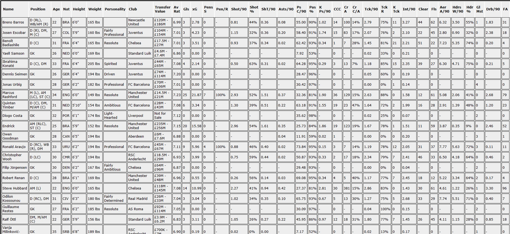

That's the question Billy Beane of the Oakland Athletics asked. In 2002, building upon his predecessor Alderson's crafting of the A's into a cost-effective team, they won 20 consecutive matches to be the first team in American League baseball to do so in 100+ years.
"It's all about evaluating skills and putting a price on them".
With many in football now attempting to do the same - instead of buying the "show" players, you buy tackles, blocks, shots, effort. You buy wins.
Popularised in Football by FC Midtjylland - they're most commonly nicknamed "Moneyball FC". See more on them here
But how do we transfer this into a virtual simulation?
Myself and many others have tried, and had great success. But everyone has their own criteria of what defines a good player.
The Football Manager series has ~145 attributes and/or metrics to determine how good someone is. 145 opportunities to get it wrong. This isn't even including the hidden attributes which we cannot see.
There are plenty of tools out there for this statistics led approach. Most of which will display the data in a percentile form. But how we understand this data is the key.
This is why I have decided to write my own program to determine how good a player is based on my criteria - what would fit my team. The outcome of which will be a score for each player - how they rank based on everything I am looking for.
So what does this look like?
For me, a player is good enough if the following apply:
- Do they work hard?
- Can they run?
- Do they do their one job better than the players I currently have?
That might sound obvious, but if you take a traditional winger for an example. Do they run with the ball more than most? Do they attempt AND complete more crosses than most? Everything else that they may do, e.g. defensive duties, shooting, I simply do not care. Their job is to run down the line and get the ball to the striker.
On the flip side, a Defensive Midfielder. I need them to be running all game, every game. They need to be intercepting, tackling, blocking, and winning headers. I do not care about their passing other than they are not losing the ball. Nice short, simple passes is good enough for this job. I do not care about their chances created, or their shots - that last one begs the question as to why they are even in that position to begin with.
A Center Back. Win the ball, ensure the team keeps the ball. Nothing more.
How do we achieve this?
The first step is retrieving the data from the game. An easy way to do this, and have it readable is to export as a HTML file, which provides us with a nice, but scary looking, table.
This is only just the start of the data. But what it provides, is an opportunity to dig into it and see what is really happening with each player.
My chosen path is to build this program using Python, and run it as a CLI command to produce a table with a list of X number of players for X position, returning a score for each player in that position.
This score will be based off what I deem important for that position, with weights applied to each statistic based on its level of importance. The end result will look something like:

Keep posted for updates, or follow the GitHub repository here
Go Back